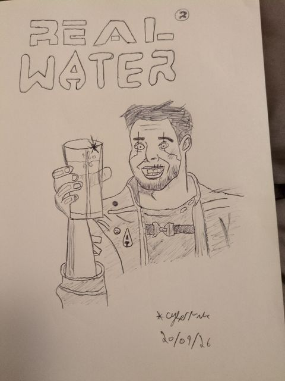
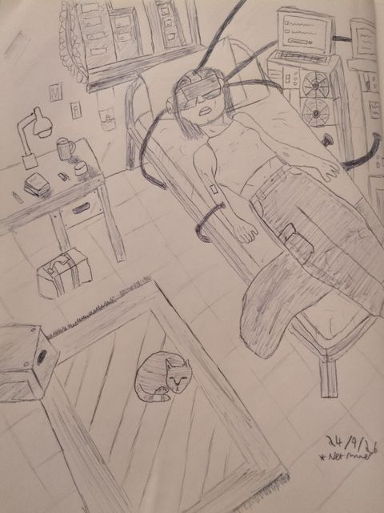

AI BLOG
Meaning without employment
Thinking about AI, human work and what gives life meaning if employment becomes less necessary.
Drawings and other things I make.


AI BLOG
Thinking about AI, human work and what gives life meaning if employment becomes less necessary.
LONGEVITY
My thoughts on AI, living to 150, Agemica and why its crypto token made me suspicious.